7.2.2 子宫肌瘤
1. 临床概述：
子宫肌瘤由平滑肌和结缔组织构成，是女性生殖系统最常见的良性肿瘤之一[34]。
- 分类：
子宫肌瘤根据其位置和与子宫解剖结构的关系进行分类。按部位划分：
子宫肌瘤：占约90%的病例。
宫颈子宫肌瘤：占剩余的10%。
根据与子宫肌层的关系 [35, 36]：
(1) 肌壁间肌瘤：
• 最常见的类型，占病例的 60–70%。
• 平滑肌瘤嵌入于子宫肌层。
(2) 浆膜下肌瘤：
- 起源于宫腔内肌瘤，向浆膜侧发育，突出于子宫表面。
• 通常通过脐带附着于子宫。
• 占约20%的病例，对月经影响甚微。
(3) 黏膜下肌瘤：
- 向子宫腔内生长，仅被粘膜层覆盖。
• 占子宫肌瘤的10–15%。
常与子宫腔扩大和畸形、月经过多、异常出血和偶见疼痛相关。
- 在严重病例中，有长蒂的子宫肌瘤可能突出到宫颈或阴道。
2011年，国际妇产科联合会（FIGO）引入了九型分类系统来指导评估手术复杂性和选择手术方式 [37]（见图7.33）。
- 临床表现：
症状取决于子宫肌瘤的大小、位置和退行状态：
(1) 月经改变：
最常见的症状包括月经量增多、经期延长、周期缩短和异常出血。
常见于有大的肌层纤维瘤、多个纤维瘤或子宫内膜下纤维瘤的患者。
慢性大量出血可导致贫血。
(2) 下腹肿块：
主要见于子宫肌瘤大或多发患者。
(3) 压迫症状：
• 膀胱受压：这会导致尿潴留或尿频。
• 直肠受压：引起便秘。
7.2.2 Fibroids (Uterine Myomas)
1. Clinical overview:
Fibroids, composed of smooth muscle and connective tissue, are among the most common female reproductive system benign tumors [34].
- Classification:
Fibroids are classified based on their location and relationship to the uterine anatomy. By site:
Uterine fibroids: Account for approximately 90% of cases.
Cervical fibroids: Constituate the remaining 10%.
By relationship to the myometrium [35, 36]:
(1) Intramural Fibroids:
• The most common type, comprising 60–70% of cases.
• Fibroids are embedded within the myometrium.
(2) Subserosal fibroids:
- Originate from intramural fibroids and develop toward the serosa, protruding beyond the uterine surface.
• Often attached to the uterus via pedicles.
• Represent about 20% of cases and have minimal impact on menstruation.
(3) Submucosal fibroids:
- Grow inward toward the intrauterine cavity, covered only by the mucosal layer.
• Account for 10–15% of fibroids.
Commonly associated with enlarged and deformed intrauterine cavities, heavy menstrual flow, irregular bleeding, and occasional pain.
- In severe cases, fibroids with long pedicles may protrude into the cervix or vagina.
In 2011, the International Federation of Gynecology and Obstetrics (FIGO) introduced a nine-type classification system for fibroids to guide the assessment of surgical complexity and the choice of surgical approach [37] (see Fig. 7.33).
- Clinical manifestations:
Symptoms vary based on the fibroid's size, location, and degeneration status:
(1) Menstrual changes:
The most common symptom, including increased menstrual flow, prolonged periods, shortened cycles, and irregular bleeding.
Frequently observed in patients with large intramural fibroids, multiple fibroids, or submucosal fibroids.
Chronic heavy bleeding may result in anemia.
(2) Lower abdominal mass:
It is mostly seen in patients with large or multiple fibroids.
(3) Compression symptoms:
• Bladder compression: This leads to urinary retention or frequency.
• Rectal compression: Causes constipation.
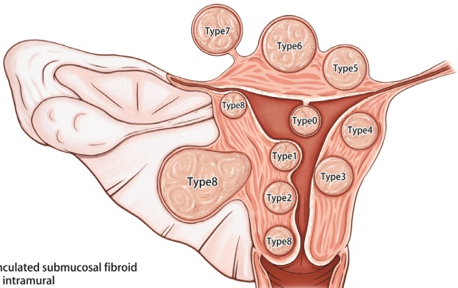
第8类：其他类型（例如位于子宫颈、子宫角、阔韧带等特殊部位的肌瘤）
(4) 其他症状：
急性腹部症状：可能由于子宫肌瘤红变或扭转引起。
- 生殖问题：子宫肌膜下纤维瘤可导致不孕或流产。
- 子宫肌瘤的超声特征：
子宫在有大或多个肌瘤的情况下，可见其增大和形态不规则。肌瘤的回声取决于纤维组织含量以及是否有变性。无变性的肌瘤通常表现为均匀的低回声或低回声肿块伴后方声影 [38]。
(1) 按类型划分的超声特征：
(a) 肌层肌瘤：
这些表现为圆形结节，形态规则，由于形成假包膜而具有清晰的周围边界。
(b) 浆膜下肌瘤：
• 以向子宫表面突出的肌层结节表现。
- 完全突出时常通过蒂附着于子宫。
(c) 黏膜下肌瘤：
- 其特征是子宫肌层内有向宫腔突出的低回声结节。
Type 8: Other types (e.g., fibroids in special locations such as the cervix, uterine horn, broad ligament)
(4) Other symptoms:
Acute abdominal symptoms: May occur due to red degeneration or torsion of fibroids.
- Reproductive issues: Submucosal fibroids can lead to infertility or miscarriage.
- Ultrasonographic features of fibroids:
The uterus appears enlarged and morphologically irregular in cases of large or multiple fibroids. The echogenicity of the fibroid varies depending on the fibrous tissue content and the presence or absence of degeneration. Fibroids without degeneration typically appear uniformly hypoechoic or hypoechoic masses with posterior acoustic shadowing [38].
(1) Ultrasonographic features by type:
(a) Intermural fibroids:
These appear as round nodules with regular morphology and well-defined peripheral boundaries due to the formation of a pseudocapsule.
(b) Subserosal fibroids:
• Manifest as intramural nodules protruding over the uterine surface.
- Often attached to the uterus by a pedicle when completely projecting out.
(c) Submucosal fibroids:
- Characterized by hypoechoic nodules in the myometrium that protrude into the uterine cavity.
当完全位于宫腔内时，可在纤维瘤和宫腔内膜之间看到一个裂隙状间隙，并在该裂隙中可见纤维瘤的蒂部。
有长蒂的子宫肌瘤可能延伸至宫颈管或阴道（见图 7.34）。
与 FIGO 分类相应的图像如图 7.35、7.36、7.37、7.38、7.39、7.40、7.41、7.42 和 7.43 所示。
(2) 多普勒超声特征：
(a) 小肌瘤：肿瘤内部和周围可见短线状血流
(b) 大型肌层纤维瘤：周围有假包膜，伴环周性或半环周性血流，该血流分支至肿瘤
(c) 有蒂纤维瘤：在蒂部显示条纹状血流信号
频谱多普勒超声在大多数情况下检测到高阻力动脉谱（见图7.44）。
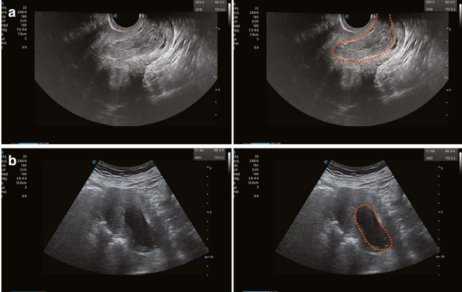
When entirely within the uterine cavity, a slit-like space can be seen between the fibroid and the uterine lining, with the fibroid's pedicle visible in the slit.
Fibroids with long pedicles may extend into the cervical canal or vagina (see Fig. 7.34).
Images corresponding to the FIGO classification are illustrated in Figs. 7.35, 7.36, 7.37, 7.38, 7.39, 7.40, 7.41, 7.42, and 7.43.
(2) Doppler ultrasound features:
(a) Small fibroids: Exhibit short linear blood flow inside and around the tumor
(b) Large intramural fibroids: Surrounded by a pseudocapsule with circumferential or semicircular blood flow, which branches into the tumor
(c) Pedunculated fibroids: Display striated blood flow signals within the pedicle
Spectral Doppler ultrasound detects high-resistance arterial spectra in most cases (See Fig. 7.44).
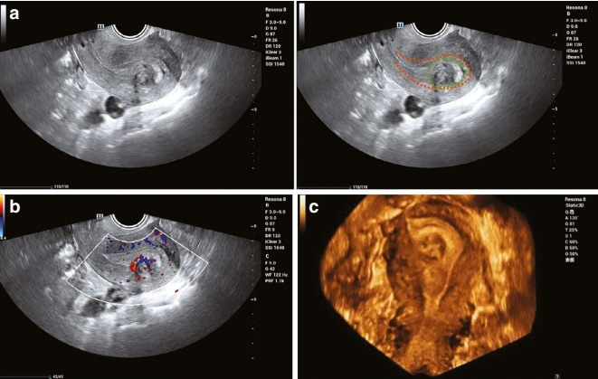
- 子宫肌瘤退行性改变的超声特征：
(1) 玻璃样变性：
• 最常见的退行性改变 [38]
子宫肌瘤内的旋涡状结构消失，被均质的玻璃样组织取代
超声上无明显或轻微改变，回声略减并呈异质性
(2) 囊变：
• 是由于肌细胞坏死和液化所致 [39]。
• 在肿瘤内可见大小不一的无回声不规则区域。
• 多个腔隙可能汇合成更大的囊性空间（见图 7.45）。
(3) 红变：
- 特异于妊娠或口服避孕药使用，涉及平滑肌瘤坏死。
• 平滑肌瘤迅速增大，伴有压痛 [40]。
- 超声显示子宫肌瘤增大，回声减低，呈细小图案的混响结构，无衰减。
- Ultrasonographic features of degenerated fibroids:
(1) Hyaline degeneration:
• The most common type of degeneration [38]
Swirling structures within the fibroid disappear, replaced by homogenous hyaline-like tissue
Minimal or no significant changes on ultrasound, with slightly reduced and heterogeneous echogenicity
(2) Cystic degeneration:
• Occurs due to necrosis and liquefaction of myocytes [39].
• Appears as irregular nonechoic areas of varying sizes within the tumor.
• Multiple cavities may coalesce into larger cystic spaces (see Fig. 7.45).
(3) Red degeneration:
- Specific to pregnancy or oral contraceptive use, involving necrosis of the fibroid.
• The fibroid enlarges rapidly, with associated pressure pain [40].
- Ultrasound shows increased fibroid size, reduced echogenicity, and a fine-patterned echogenic structure without attenuation.

- 彩色多普勒显示肿瘤内血流减低（见图 7.46）。
(4) 脂肪变性和钙化：
脂肪变性：脂肪小滴沉积在肌瘤内，超声上表现为高回声区。
石灰化：呈环状或斑点状强回声，伴后方声衰减和多普勒血流减少（见图7.47）。
(5) 肉瘤样变：
主要发生在绝经后妇女，与恶性转化相关，可导致快速生长、疼痛和出血。
肿瘤组织呈软、脆、灰黄色，边界不清。
超声显示一个快速增大的肿块，边界模糊，回声不均质。
多普勒显示血流信号增加，而阻力指数（RI）明显降低（见图 7.48）。
- Color Doppler shows decreased blood flow within the tumor (see Fig. 7.46).
(4) Fatty degeneration and calcification:
Fatty degeneration: Deposition of fat globules within the fibroid, seen as hyperechoic areas on ultrasound.
Calcification: Presents as ring-like or speckled strong echoes with posterior sound attenuation and reduced blood flow on Doppler (see Fig. 7.47).
(5) Sarcomatous degeneration:
Mainly occurs in postmenopausal women and is associated with malignant transformation, leading to rapid growth, pain, and bleeding.
Tumor tissue appears soft, brittle, and grayish-yellow, with poorly defined boundaries.
Ultrasound shows a rapidly enlarging mass with unclear borders and heterogeneous echogenicity.
Doppler reveals increased blood flow signals and a marked reduction in the resistance index (see Fig. 7.48).
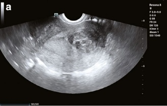
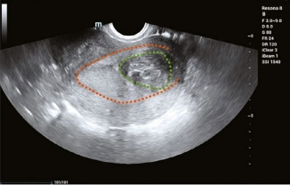
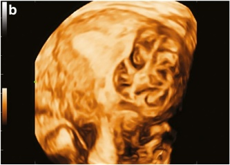
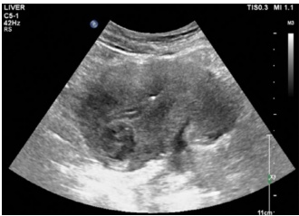
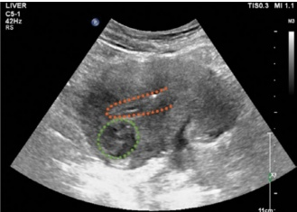
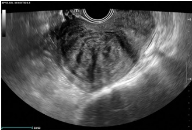
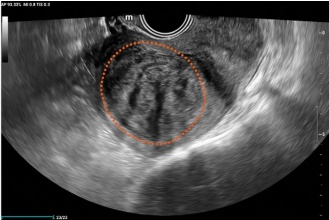
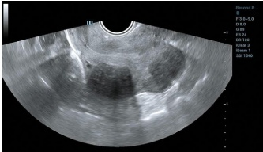
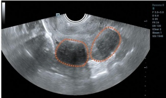
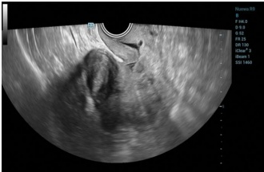
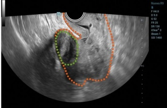
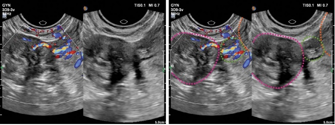
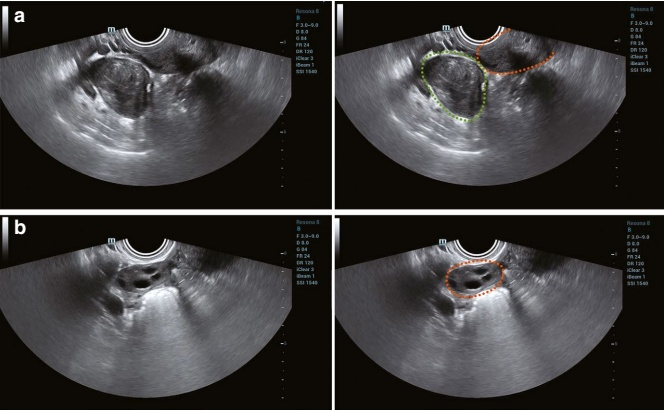
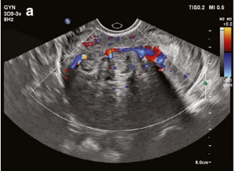
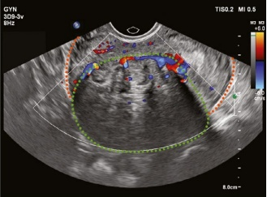
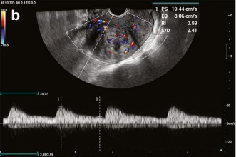
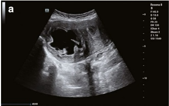
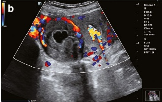
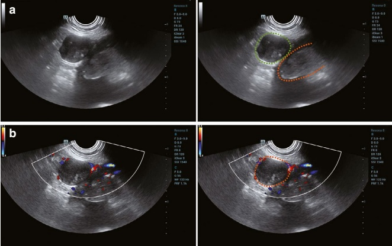
- 鉴别诊断：
(1) 黏膜下肌瘤：
必须与
• 子宫内膜增生
• 子宫内膜息肉
• 子宫内膜癌
参见表 7.4 进行详细比较。
(2) 浆膜下肌瘤：
需要与实体性卵巢肿瘤鉴别：
如果肿瘤通过蒂与子宫相连，并且可观察到同侧正常的卵巢，则可能是浆膜下肌瘤。
当蒂部过于精细难以辨认，且同侧卵巢视野不佳时，区分两者变得具有挑战性。
- 对生育能力和治疗原则的影响：
子宫肌瘤是导致不孕的常见原因。患有子宫肌瘤的妊娠期患者发生流产和产科并发症的风险增加。诊断后强烈建议手术切除黏膜下肌瘤，以改善生育结局并减少并发症 [41]。
- Differential diagnosis:
(1) Submucosal fibroids:
Must be differentiated from
• Endometrial hyperplasia
• Endometrial polyps
• Endometrial cancer
Refer to Table 7.4 for detailed comparisons.
(2) Subserosal fibroids:
Need to be differentiated from solid ovarian tumors:
A subserosal fibroid is likely if the tumor is connected to the uterus via a pedicle and the ipsilateral normal ovary is visualized.
Distinguishing the two becomes challenging when the pedicle is too delicate to identify and the ipsilateral ovary is poorly visualized.
- Impact on fertility and treatment principles:
Uterine fibroids are a significant cause of infertility. Pregnant patients with fibroids face an increased risk of miscarriage and obstetric complications. Surgical removal of submucosal fibroids is strongly advised after diagnosis to improve fertility outcomes and reduce complications [41].
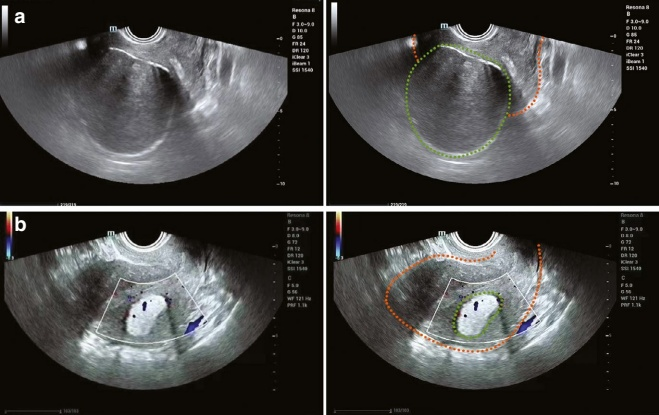
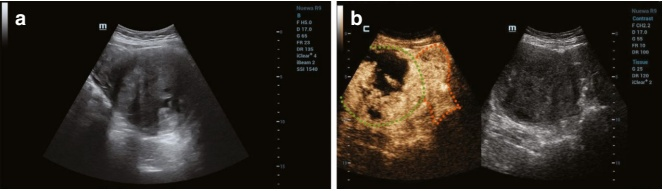